Ogrodzenia, bramy, podjazdy, tarasy i przestrzenie publiczne. Zdjęcia z wykonanych robót i z naszych ogrodów wystawowych.
 Ogrodzenie z bloczka piaskowego z przesłonami poziomymi
Ogrodzenie z bloczka piaskowego z przesłonami poziomymi Podjazd z kostki prowadzący do domu
Podjazd z kostki prowadzący do domu Nabrzeże z nawierzchnią z kostki i płyt
Nabrzeże z nawierzchnią z kostki i płyt Projekt otoczenia domu z ozdobnym podjazdem
Projekt otoczenia domu z ozdobnym podjazdem Ogrodzenie panelowe z bramą przesuwną przy domu
Ogrodzenie panelowe z bramą przesuwną przy domu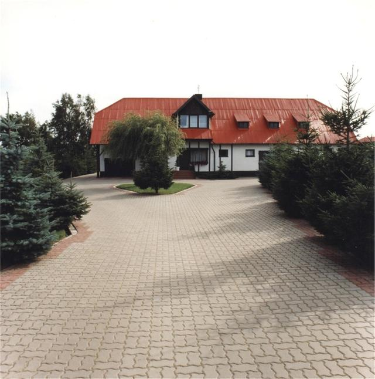
Rozległy podjazd i plac przed budynkiem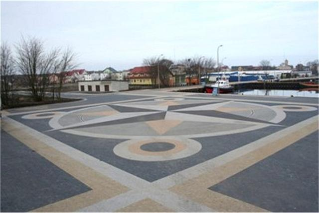
Plac miejski z rozetą z kostki Wizualizacja podjazdu i zieleni przy domu
Wizualizacja podjazdu i zieleni przy domu Ogrodzenie z betonu łupanego z przęsłami poziomymi
Ogrodzenie z betonu łupanego z przęsłami poziomymi Ścieżka z kostki z falistym obramowaniem
Ścieżka z kostki z falistym obramowaniem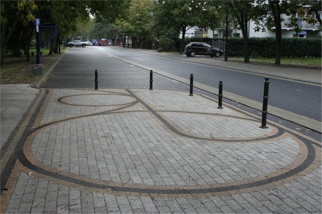
Ciąg pieszy wzdłuż ulicy Projekt tarasu z aranżacją wypoczynkową
Projekt tarasu z aranżacją wypoczynkową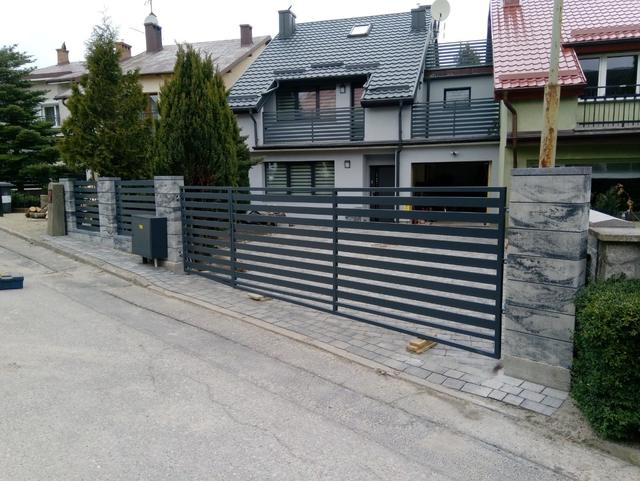
Przęsła poziome w antracycie na podmurówce Podjazd z rabatą i obramowaniem z kostki
Podjazd z rabatą i obramowaniem z kostki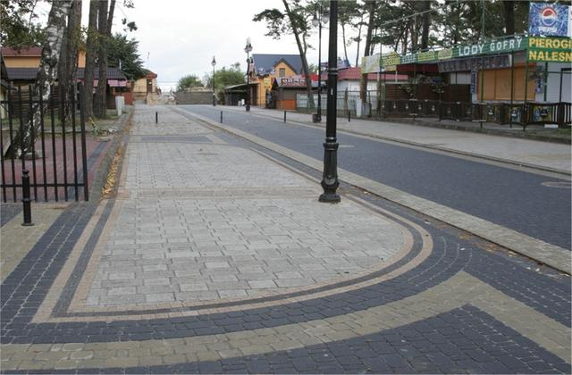
Chodnik i zjazdy w centrum miejscowości Projekt ogrodu z nawierzchniami i zielenią
Projekt ogrodu z nawierzchniami i zielenią Ogrodzenie poziome wzdłuż całej działki
Ogrodzenie poziome wzdłuż całej działki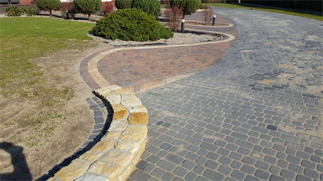
Ścieżka ogrodowa z murkiem z piaskowca Parking i drogi osiedlowe
Parking i drogi osiedlowe Plan zagospodarowania działki
Plan zagospodarowania działki Białe słupki i przęsła poziome na nowym osiedlu
Białe słupki i przęsła poziome na nowym osiedlu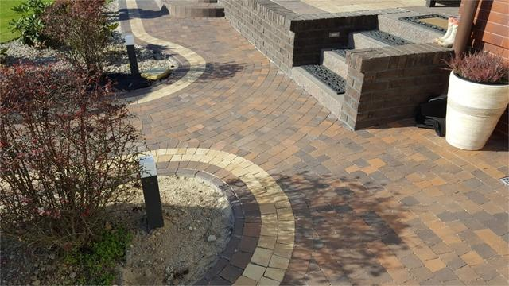
Schody i murek oporowy przy tarasie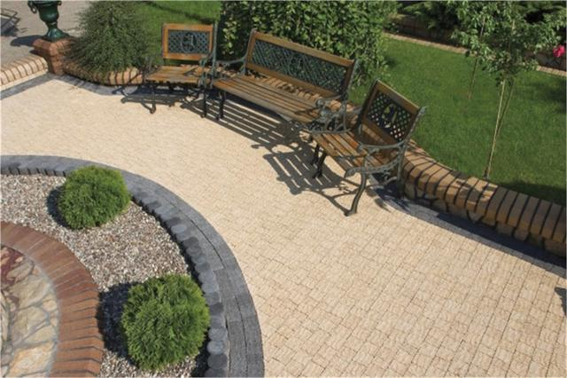
Ciąg spacerowy z ławkami w parku Projekt otoczenia domu z tarasem i podjazdem
Projekt otoczenia domu z tarasem i podjazdem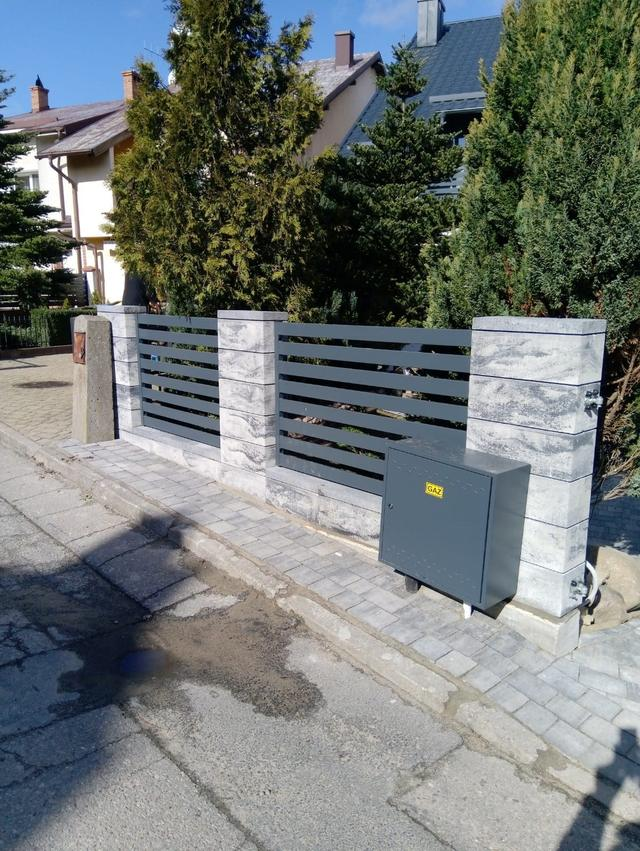
Słupki z bloczka łupanego i przęsła poziome Detal wzoru z kostki w trzech odcieniach
Detal wzoru z kostki w trzech odcieniach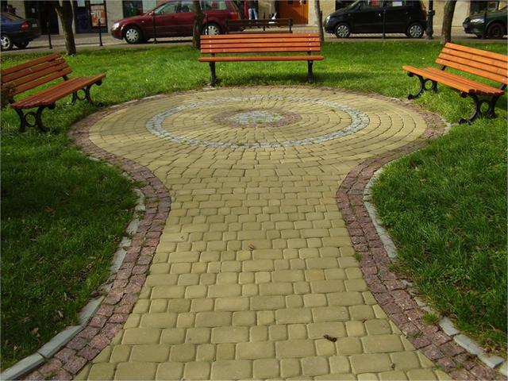
Plac wypoczynkowy z kostki w parku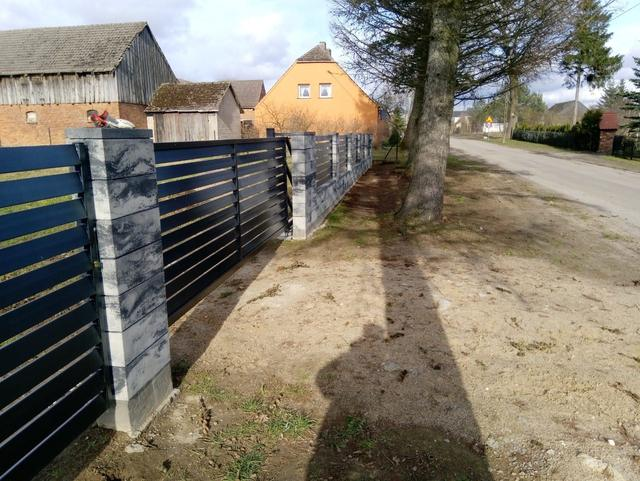
Brama przesuwna w antracycie ze słupkami z bloczka Wzór z kostki żółtej i grafitowej
Wzór z kostki żółtej i grafitowej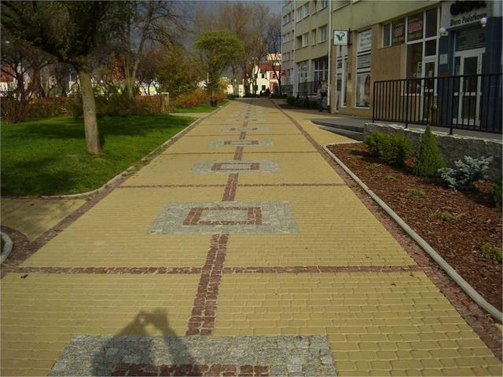
Deptak z ozdobnym wzorem nawierzchni Murowane ogrodzenie z kutymi przęsłami
Murowane ogrodzenie z kutymi przęsłami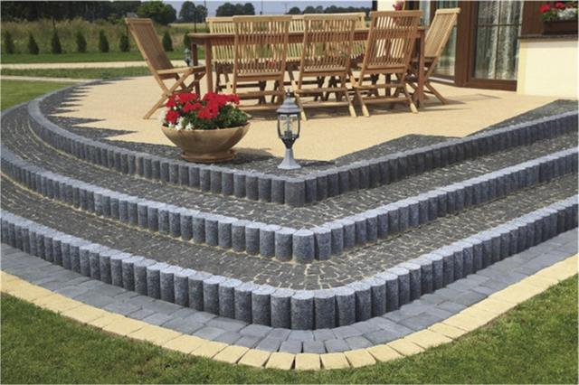
Taras z palisadą i stopniami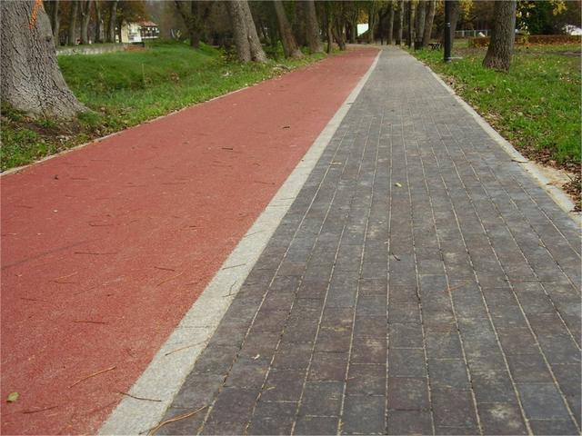
Ścieżka pieszo-rowerowa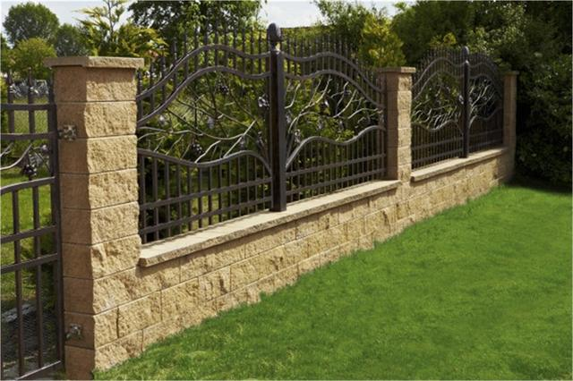
Kute przęsła z motywem roślinnym na murku Nawierzchnia z płyt wielkoformatowych
Nawierzchnia z płyt wielkoformatowych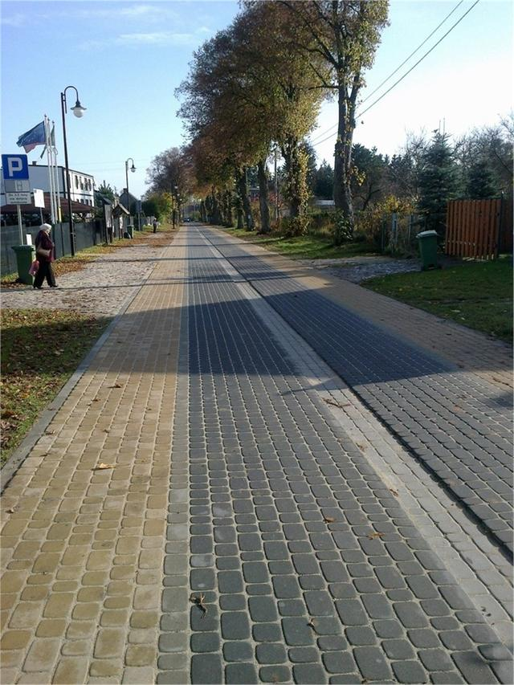
Chodnik i ścieżka rowerowa wzdłuż drogi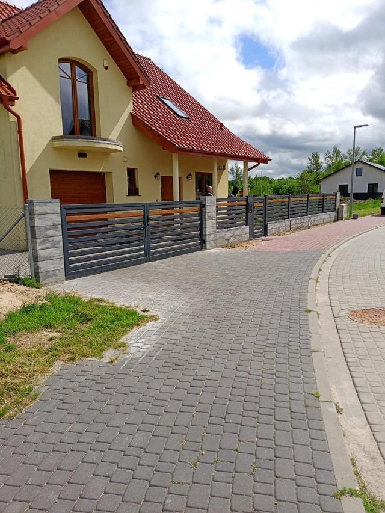
Ogrodzenie z przęsłami poziomymi i podjazd z kostki Schody wejściowe z płyt tarasowych
Schody wejściowe z płyt tarasowych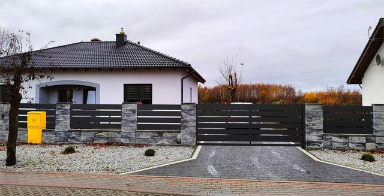
Wjazd z bramą i podjazdem z kostki Opaska i podjazd wokół domu
Opaska i podjazd wokół domu Podjazd przed garażem
Podjazd przed garażem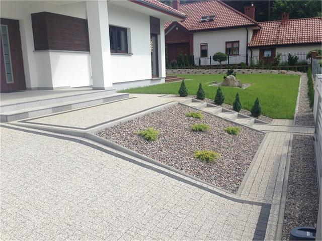
Ogród frontowy z nawierzchnią i obrzeżami Plac z kostki z centralną rabatą
Plac z kostki z centralną rabatą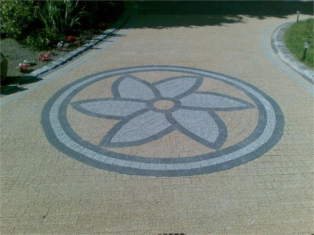
Rozeta z kostki w nawierzchni podjazdu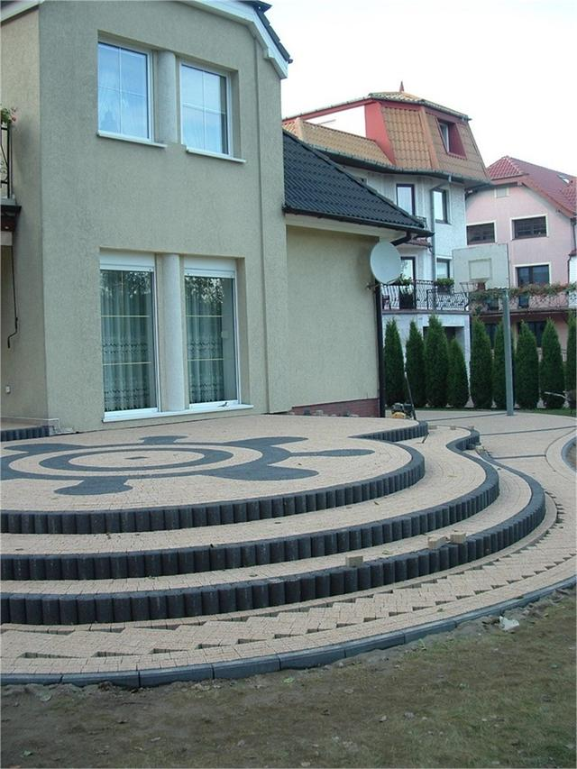
Półokrągłe schody z kostki przed domem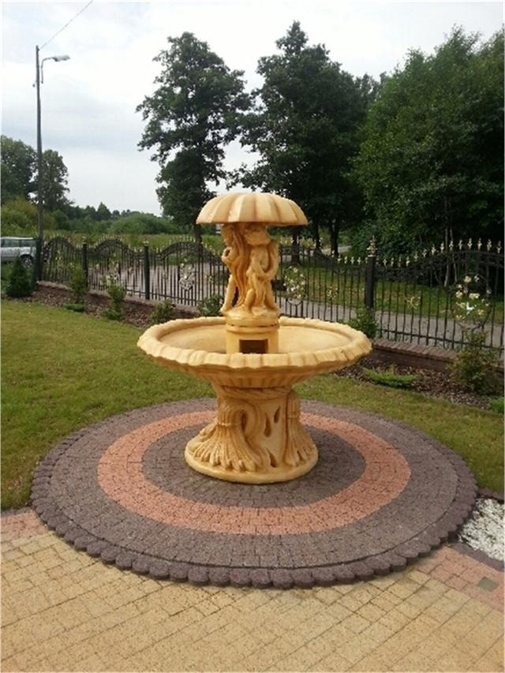
Fontanna na okrągłym placu z kostki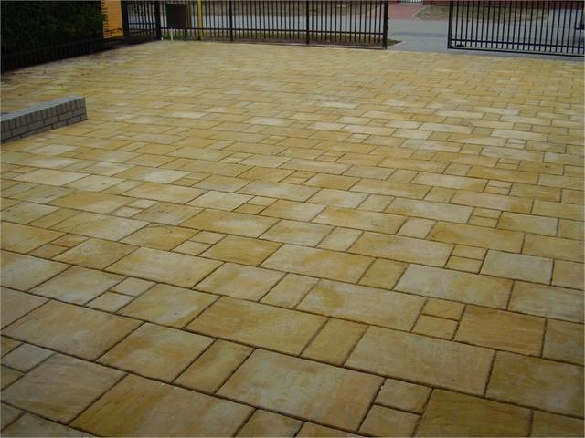
Nawierzchnia z płyt o nieregularnym wzorzeProszę powiedzieć, co ma powstać i na jakiej działce. Reszta jest po naszej stronie.
{kind=link}
{kind=link}
{kind=link}
{kind=link}
{kind=link}
{kind=link}
{kind=link}
{kind=link}
{kind=link}
{kind=link}
{kind=link}
{kind=link}
{kind=link}
{kind=link}
{kind=link}
{kind=link}
{kind=link}
{kind=link}
{kind=link}
{kind=link}
{kind=link}
{kind=link}
{kind=link}